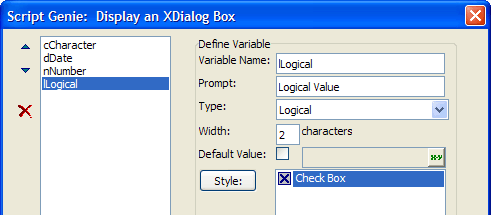
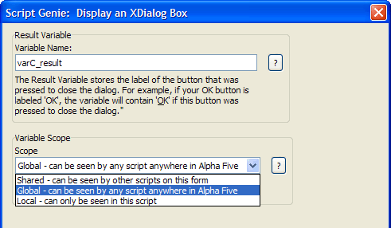
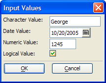
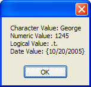

Returning Multiple Values from an Xdialog
Users of Action Scripting can create an Xdialog window that creates and sets the values of multiple variables. For example:

You may place as many controls of different types as you need upon the Xdialog. Each control may set a character, date, numeric, or logical variable.

On the third page of the genie, you set the variable scope. If you set the scope to "Global", the variables created with the Xdialog can be read by any other script. If you set the scope to "Shared", they can be read by a calling script.
In the case where the variables are "Shared" the following script produces 2 windows. The Action Script that creates the Xdialog is named "example2".
|
script_play_local("example2") ui_msg_box("","Character Value: " + cCharacter + crlf()+ "Numeric Value: " + s_quote(nNumber) + crlf()+ "Logical Value: " + s_quote(lLogical) + crlf()+ "Date Value: " + s_quote(dDate)) |
First the Xdialog:

And then a message box:

See Also